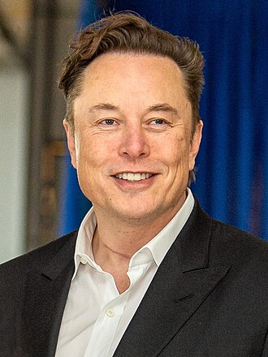

ELON MUSK
HOME

Elon Reeve Musk (/ˈiːlɒn/ EE-lon; born June 28, 1971) is a businessman known for his key roles in Tesla, SpaceX, PayPal, OpenAI, and Twitter (which he rebranded as X). For more
click here